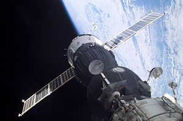

“Everything changes and nothing stands still.” ~ Heraclitus
Everything is always in flux. The only constant is change, and the only change is constant. Constancy and change are distinguishable interpretations derived from distinguishable perspectives, each perspective observing the same subject; the two concepts, together, are merely two sides of the same token. They are an equivalency. All things change, constantly, and the only thing unchanging is change. Such a paradox is only evidence of the binary confusion between change and constancy, revealing the truth of their unity.
Nothing in reality is truly static; only the abstract thought of change is constant. Everything is always moving because motion is relative and each aspect of the universe is relative to every other. So even if something seems still, it is also moving relative to something else. Even from the absolute precision of the holistic perspective, considering the universe as the whole it is, the universe still moves within itself relative to itself. Change is such an essential force of the universe that it has no defined centers or origin, unlike gravity, magnetism, and the other more defined forces.
Change is fundamentally necessary to existence. Without gradual difference, relativity is impossible, and thus inexperienceable. Yet we do experience, due to the constant change of reality. Imagine no time passing. You can't, because sensation requires the passing of time.
Note that gradual difference is real, but separating difference is just an idea we use to approximate (stereotype) things such as land\water, heat\chill, smart\stupid, black\white. This is the same confusion we have with racial stereotyping, and all other forms of bigotry. We fail to respect how we are really the same, instead of the ways we seem starkly different.
That's not to say that we are not different, just to say that the difference is smoother than we imagine it to be.
Our minds recognize that which appears different, not that which already appears the same – we pick the foregrounds out of the backgrounds, and the motion out of the apparent static... we enjoy music, not white noise. Because we only notice movement/change, our senses are feeds to consciousness of change itself, of motion in the waveforms of the universe. Our senses are our experience and reality.
Fundamental to our understanding of change is our definition of time. We measure change in seconds, hours, millennia, and other units. But just as mathematics is only a language for approximating what we measure, time is only a definition by which we discretely approximate the change we experience. Time is often described as an irreversible arrow, forever moving forward. But this is a contrived way to understand change. Edgar Mitchell (astronaut and founder of the Institute of Noetic Sciences) writes in his book The Way of the Explorer..
"Nature knows nothing of time; all she follows is a process as energy and matter flows in its cosmic dance. Time is an invention of mind – a part of the map, not the territory."
"Time is about maps (clocks) and knowing, not about actual territories (reality). Nature follows processes but knows nothing of the hour, minute, or second. In our solar system, we measure the day based upon the convention of one rotation of our Earth upon its axis. But in the world of subatomic particles, the day is irrelevant."
As a side effect of confusing time for the change we experience, it's easy to see time as absolute, as if there is some universal clock to synchronize with. But to assume as much is to confuse knowledge (based on our reading of clocks) with the more relativistic flow of existence.

In reality, orbiting satellites go out of sync due to relativistic time dilation; as Einstein showed, motion/change is relative.
Only change is essential to experience; the concept we call time is just a fluffy measurement system convenient for measuring (approximating). Reality evolves simply through ceaseless, relative motion.